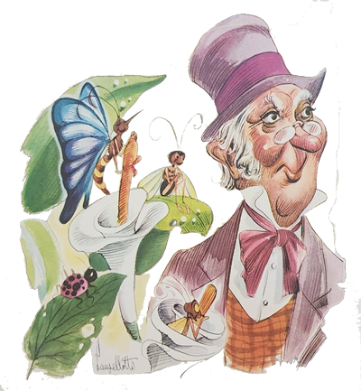
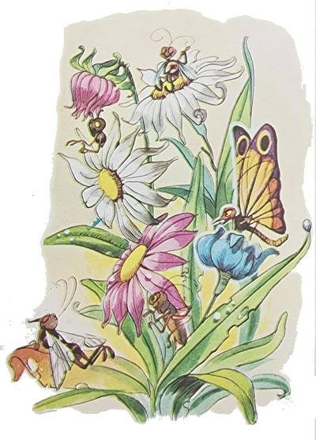
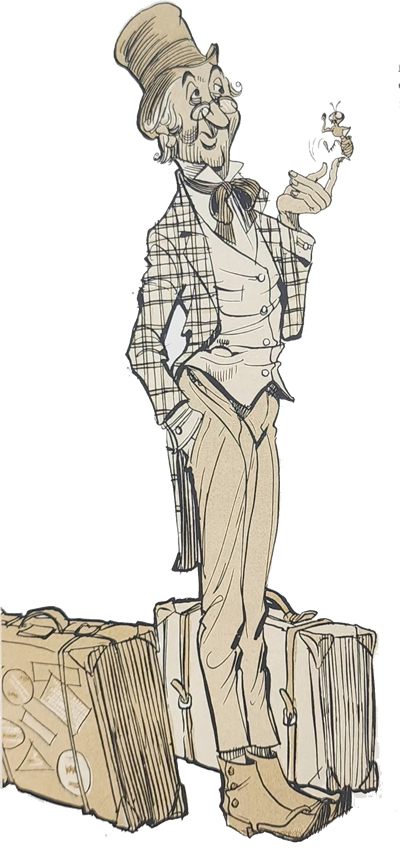
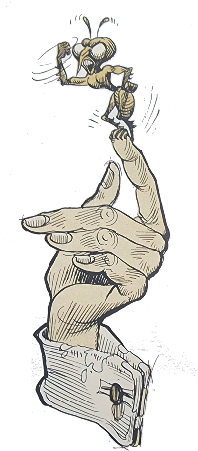
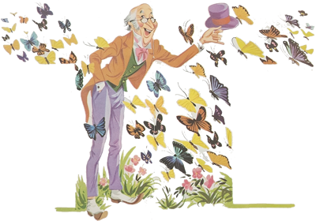
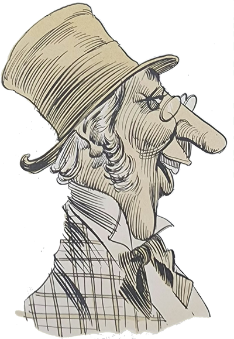
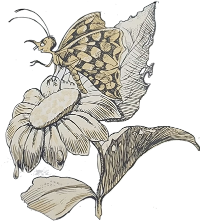
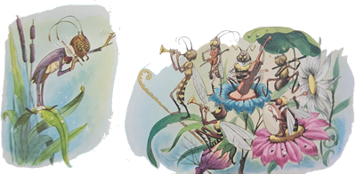
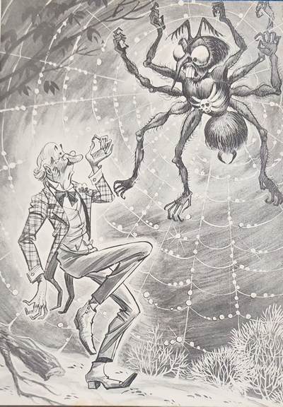

Numa linda tarde de calor, o Arrelia e as crianças estavam dando um passeio e encontraram uma grande árvore coberta de flores, em cujos ramos algumas aves cantavam alegremente. Pararam todos e ficaram de cabeça erguida admirando o maravilhoso quadro.
Encontravam-se completamente distraídos quando surgiu um homem carregando uma enorme e pesada mala. Vinha correndo desesperadamente como se estivesse sendo perseguido por uma onça. Ao chegar perto dos nossos amigos, largou a mala e agarrou-se ao Arrelia, gritando:
- Esconda-me! Por favor, esconda-me!

Apanhado assim de surpresa, o Arrelia exclamou:
- Mas o que é isso? Largue-me! O que está acontecendo? É um assalto?
Após muita luta, o homem libertou-o e, dando um forte suspiro, disse:
- Consegui! Ela passou e não me viu! Acho que estou salvo!
Se o Arrelia estava assustado, as crianças estavam apavoradas. Pouco a pouco, elas haviam-se colocado prudentemente do outro lado da árvore.
- Afinal, o senhor conseguiu o quê? Quem é que passou e não o viu? Por aqui não passou ninguém! – disse o Arrelia.
O estranho tirou um lenço de respeitável tamanho de um dos bolsos das calças e começou a enxugar o rosto coberto de suor. Era um tipo extravagante: usava terno azul muito vivo, gravata vermelha numa blusa amarela e sapatos brancos, o que fez Iberê comentar com as outras crianças:
- Puxa! Ele parece uma bandeira!
Depois de haver enxugado o rosto demoradamente, o homem disse ao Arrelia:
- Pois então não viu? Não percebeu aquela borboleta atrás de mim?
- Não vi borboleta nenhuma – respondeu o Arrelia. Não vá dizer que “estauva” fugindo de uma borboleta!
- Exatamente – confirmou o homem. E o senhor não faz ideia do quanto corri para conseguir livrar-me. Acho que corri mais de uma hora!
O Arrelia fez uma expressão para as crianças que queria dizer: “Esse é perigoso!”
- Então o senhor vinha fugindo de uma borboleta? – perguntou ele. Ela estava “armauda”?
- Está pensando que é brincadeira minha? – exclamou o outro, apanhando a mala. Pois não é. Conheci aquela borboleta no Paraíso dos Insetos e de lá é que estou chegando. Gostaria de contar o que me aconteceu, porém estou muito cansado. Conhece algum hotel nesta cidade? Depois contarei o que houve. O senhor não vai acreditar! Encontrei um lugar onde os insetos falam!
O Arrelia olhou novamente para as crianças e resolveu levar o recém-chegado para o hotel em que ele e as crianças estavam hospedados. O homem ficou lá e eles voltaram para continuar seu passeio.
- Esse é o mais “exageraudo” que já apareceu. Fugir de uma borboleta! Insetos que falam! E ele não estava brincando!
- Não deve ser muito certo da cabeça – comentou Carlinhos, olhando para trás a fim de certificar-se o estranho ficara mesmo no hotel.
Prosseguiram o passeio e toda a vez que encontravam uma borboleta o Arrelia brincava:

- Prestem atenção para ouvir se ela fala. Talvez essa seja a tal que fez o “coitaudo” correr.
Com a continuação do passeio, o incidente acabou por ser esquecido. Ninguém se lembrava mais do caso. Deram uma porção de voltas pela cidade e depois, tendo chegado a hora de jantar, tomaram a direção do hotel.
Jantavam despreocupadamente quando Jaci deu um cutucão no Arrelia.
- Que foi? – perguntou ele, assustado. Quase que me engasguei!
- Ali! – respondeu a menina, apontando com os olhos sem virar a cabeça. Olhe quem está ali!

O Arrelia procurou o que a menina estava mostrando. Estremeceu-se todo:
- Ih! É o homem da borboleta! Já nem me lembrava mais dele! Vamos ficar quietos para que não nos perceba!
Não adiantou nada. O outro terminou de jantar e veio para a mesa deles:
- Aí estão os meus bons amigos! Pois eu pensava em vocês!
Pediu licença e tomou lugar à mesa. Dirigiu-se ao Arrelia:
- Preciso agradecer-lhe o favor que me fez. Salvou-me da borboleta!
- Fale baixo! – pediu o Arrelia. Se nos ouvem vão pensar que somos loucos!
- Tem razão! Tem razão! – concordou. Nem todos estão aptos a acreditar no que me aconteceu! Ainda bem que encontrei o senhor que não duvidou um só instante!
- Eu? – surpreendeu-se o Arrelia. Mas . . . mas . . . eu . . .
- Em gratidão, quero contar-lhe o caso por completo.
- Mas não é preciso. Nós compreendemos.
- Faço questão! Não quero guardar o segredo só para mim.
Vendo que o homem não ia desistir facilmente de sua intenção, o Arrelia conformou-se e passeou um olhar desanimado pelas crianças.
- Está bem. Pode contar sua estória. Até que é interessante saber-se algo sobre insetos que falam, não em lenda mas de verdade, não é?
- Exatamente – confirmou o outro, acomodando-se melhor na cadeira. Chamo-me Inácio Guerreiro mas sou conhecido por Guerreiro.
O Arrelia, disfarçando uma risada, também se apresentou, o mesmo fazendo com as crianças. O homem percebeu a risada do Arrelia, não gostou e disse-lhe:
- Posso saber no que o senhor achou graça? Não consigo ver nenhum motivo!
Um tanto sem jeito, o Arrelia esclareceu:

- Sabe o que entendi quando o senhor disse o seu nome? “E nasce o guerreiro”. É uma ocasião um tanto imprópria para o senhor transformar-se em guerreiro, já que somos de paz. Não vá cismar de fazer guerra conosco, hein?
- O senhor gosta de fazer graça, não é? Pois fique sabendo que sou guerreiro, mas um guerreiro diferente. Sabe qual é a minha guerra?
- Não “fauço” ideia.
- É vender mercadoria por esse sertão afora!
- Ah! Já sei! O senhor é um mascate!

- Não gosto de ser chamado assim. Prefiro que me chamem de agente de vendas.
- Não tem dúvida, Seu Guerreiro. Não vamos guerrear causa disso. Mas afinal por que o senhor estava fugindo da borboleta?
- O senhor me confundiu tanto com as suas brincadeiras que eu já nem me lembrava do motivo que me trouxe aqui. Bem, preciso começar do princípio. Os meus clientes estão esparramados por esse sertão afora. Para alcança-los, utilizo os mais diferentes meios de transporte: automóvel, cavalo. Canoa, a pé . . . Faz muitos anos que viajo, e o senhor nem pode imaginar o que tenho encontrado por aí. Já vi muitas coisas, como não? Coisas de achar graça e de sentir medo; coisas alegres e coisas tristes.
- Faço ideia, Seu Guerreiro – disse o Arrelia, começando a brincar com as faíscas de pão que haviam caído na toalha.
- O que me aconteceu, porém, nesta última viagem valeu por tudo o que eu tinha visto.
O Arrelia não resistiu:
- Diga logo, Seu Guerreiro! Estou começando a ficar curioso!
- Sempre vou a lugares distantes mas nunca me havia aventurado como da última vez. Na esperança de encontrar algum novo comprador, fui entrando pelo sertão, a pé, pois de outro modo não dava mais por causa da densidade da mata. Em determinado momento, sentindo-me cansado, sentei-me numa grossa raiz de árvore. Tive a impressão de ouvir vozes, muitas vozes ao mesmo tempo, e pensei estar sendo vítima de uma alucinação. Apurei o ouvido e entendi claramente alguém dizer: “Tire o pé daí! Olhe o que está fazendo!” Olhei para todos os lados e não vi ninguém. Percebi que a voz partia do chão. Comecei a investigar. Notei apenas a presença de algumas formigas que corriam de um lado para outro. Embora eu não quisesse acreditar, acabei concluindo que eram elas que estavam falando. Deixei que uma subisse na minha mão e a ouvi dizer as mesmas palavras: “Tire o pé daí! Olhe o que está fazendo!” Tirei o pé e notei que havia pisado num formigueiro.
- Está contente agora? – perguntou-me a formiguinha. Veja a destruição que fez. Arruinou nossa casa e feriu uma porção de formigas. O que veio fazer aqui?
Expliquei-lhe o motivo que me levava tão longe e ela deu risada, dizendo-me depois:
- Tanto sacrifício para viver? Nós, se queremos comer, comemos e pronto. Porque não faz o mesmo?
Tentei explicar-lhe que o nosso sistema é diferente. Que primeiro precisamos vender para depois comprar. Contudo, ela não conseguiu compreender.

- Muito complicado – disse. O nosso sistema é mais fácil.
Desisti do assunto e perguntei-lhe se eu podia fazer alguma coisa para compensar o mal que havia causado.
- Há muita coisa que você pode fazer – respondeu-me. Só que não tenho tempo para conversar mais. Procure encontrar outro inseto que goste de falar.
Tratei de fazer a sua vontade. Antes, porém, consegui saber que eu estava no Paraíso dos Insetos. Nenhum outro bicho podia entrar ali.
- E o senhor conseguiu entrar? – perguntou o Arrelia.
O homem ficou furioso:
- O senhor está-me chamando de bicho?
- Nem pensei em tal coisa, Seu Guerreiro! – negou o Arrelia, fingindo estar assustado. Falei por falar! Não vá agora fazer uma guerra, hein?
Seu Guerreiro continuou o assunto sem perceber o ar de riso das crianças, que haviam adivinhado a verdadeira intenção do Arrelia.
- Conforme fui entrando naquele lugar, vi que aumentava cada vez mais a quantidade de insetos. Coisa nunca vista! E não encontrei ali um pássaro ou um animal. O barulho que faziam era surpreendente, pois se não estavam falando, estavam cantando. Dirigi-me a diversos deles a fim de obter a informação desejada mas logo vi que a coisa não ia ser fácil porque todos fugiam à minha aproximação.
Andei uma porção de tempo sem obter resultado. Por fim, consegui aproximar-me de uma linda e grande borboleta que se encontrava pousada numa flor. Ela também pretendeu fugir-me. Antes que o fizesse consegui dizer-lhe que eu não tinha nenhuma intenção de fazer mal àqueles insetos e contei-lhe o episódio das formigas. Depois perguntei:
- Você sabe qual é a coisa que a formiga disse que posso fazer para compensar o dano que lhes causei?

- Sei – respondeu a borboleta. Mas já que veio aqui movido por um desejo tão nobre, convido-o a conhecer melhor os habitantes deste paraíso. Mais tarde saberá do que se trata.
Como eu já estava bastante curioso, aceitei de bom grado o oferecimento da borboleta. Fomos andando, ou melhor: somente eu porque ela ia voando. Os outros insetos, vendo-nos juntos, não mais fugiam. Pelo caminho, ela foi-me dizendo:
- Aqui nós somos felizes. Damo-nos todos muito bem e não há pássaros nem animais para aborrecer-nos. Mesmo os insetos que costumam comer os outros insetos vivem aqui do néctar das flores. Mas nossa felicidade não é completa e a causa você logo saberá, já que se comprometeu a eliminá-la.

Eu não aguentava mais de curiosidade. Fomos seguindo. Ela avisou-me:
- Vai assistir agora ao baile das libélulas. Olhe.
Passei os olhos pelo lugar que ela me havia indicado. Vi uma infinidade de libélulas pousadas nas plantas à margem de uma lagoa. Logo adiante, a orquestra estava-se preparando.
- Orquestra? – surpreendeu-se Iberê. Tinha uma orquestra na mata?
O Arrelia e as outras crianças também ficaram surpresos. Seu Guerreiro perguntou-lhes:
- Vocês estão imaginando uma orquestra de pessoas?
Eles disseram que sim.
- Pois não era – explicou. Era uma orquestra composta de insetos!
- Não “diuga”! – gritou o Arrelia, completamente admirado.
- Pois é verdade – confirmou Seu Guerreiro. Uma orquestra composta de insetos: grilos e cigarras.
Quando cheguei, eles estavam-se preparando para tocar. O maestro era um enorme gafanhoto. Ele deu um sinal e a música principiou. Música estranha, diferente, porém bonita. Logo aos primeiros sons as libélulas voaram e puseram-se a dançar sobre a lagoa. Milhares delas encheram os ares, numa dança complicada e maravilhosa.
A borboleta que me acompanhava perguntou-me:
- Então? Está gostando?
- Realmente é uma festa muito empolgante e bonita – respondi. Mas existe algum motivo para a realização desse baile?
- Existe sim. Como não? – disse ela. Hoje é o dia em que incontáveis borboletas virão de vários e distantes lugares para juntar-se a nós. Vão passar a viver conosco neste paraíso e desejamos recebê-las festivamente.
- E quando vão chegar? – interroguei com interesse.
A borboleta fitou o céu demoradamente e falou-me que elas não tardariam:
- Devem chegar antes de anoitecer. Portanto não devem estar longe.
Ficamos ali olhando, pacientemente, ora para as libélulas, ora para o céu, na expectativa de ver as borboletas. Passado algum tempo, vi uma coisa que jamais esquecerei em toda a minha vida. Uma nuvem colorida surgiu ao longe, movendo-se com rapidez em nossa direção. O céu ficou multicolorido. Pareciam pedacinhos de papel, das cores mais diversas, carregados pelo vento. Eram as borboletas.
Quando se encontravam próximas do lugar em que estávamos, começaram a descer. O Sol foi escondido por elas. Começaram a pousar nas árvores, nas flores, no chão, e logo aquele lugar ficou todo colorido. Acho que jamais alguém viu tantas borboletas. Apesar de cansadas, algumas não resistiram à alegria do baile e juntaram-se às libélulas. O espaço sobre a lagoa ficou todo colorido e a superfície da água também, ao refleti-las.

Veio a noite, e as borboletas procuraram refúgio, inclusive a que estava comigo, não sem prometer antes que assim que amanhecesse me contaria o segrdo.
- E o senhor passou a noite na floresta? – quis saber Jaci.
- Que remédio! – disse Seu Guerreiro. Eu estava demasiadamente longe de alguma cidade ou povoado para arriscar uma viagem. Seria um risco muito grande de fazer uma viagem pelo sertão à noite. Ali, no Paraíso dos Insetos, pelo menos eu estava garantido, uma vez que não havia animais.
Procurei ajeitar-me para passar a noite o melhor possível. Escolhi uma árvore apropriada, de galhos grossos, e improvisei neles uma cama. Mas não pensem que a noite foi mais sossegada que o dia.
- Não foi? – espantou-se o Arrelia. Eles não ficaram quietos?
- Qual! – exclamou Seu Guerreiro. Alguns sim, porém outros não. Os grilos principalmente não pararam de cantar. E para completar, sabem o que aconteceu?
- Olhe, não “fauço” ideia – respondeu o Arrelia.
- Vieram os vaga-lumes! – gritou Seu Guerreiro, gesticulando exageradamente. E como conversavam! Passavam aos pares, falando sem parar, clareando a noite tantos eran eles. Depois apareceu uma porção de mariposas. Voaram pela noite adentro e também não deixaram de fazer sua festa. Aproveitaram a música dos grilos para dar uns rodopios. Afinal, o cansaço acabou por vencer-me e adormeci apesar do barulho. Acordei com as primeiras luzes da manhã. Já não encontrei as mariposas e os vaga-lumes. Em seu lugar esvoaçavam as borboletas e outros insetos.
Desci da árvore e pus-me a esperar pela minha amiga borboleta, que deveria vir contar-me o segredo conforme prometera. Comecei a andar por ali a fim de matar o tempo. Interessei-me pela conversa entre um grilo e uma borboleta.
- Ouça – dizia ele. Se você ensinar-me a voar como você voa, poderei ensiná-la a tocar música como eu toco.
- Está certo – concordou ela. Mas não sei se será fácil. Em todo caso, vamos lá. Olhe. Faça isto. Bata as asas assim. Percebe como é?
O grilo esforçava-se ao máximo mas não conseguia imitá-la. Ela insistia:
- Assim! Olhe! Faça assim! Não desse jeito!

O pobre já estava cansado. Eu disse-lhes:
- Não adiante! A imitação não conduz a nada! Cada um tem de ser como é!
Eles estavam tão preocupados em imitar um o outro que nem me ouviram.
Logo a borboleta minha amiga chegou e não pude ver o que aconteceu aos dois.
- Como passou a noite? – perguntou-me ela.
- Não muito bem – respondi. Os insetos fizeram um pouco de barulho.
- Não se preocupe – disse a minha amiga, procurando confortar-me. Mais algumas noites aqui e ficará habituado. É assim mesmo.
- O que?! – exclamei assustado. Mais algumas noites? Não quero passar mais nenhuma noite aqui!
- E a sua promessa?
- Sim, eu sei. Mas não dá para resolver hoje?
- Talvez. Depende da sua coragem e valentia.
- Bem. Será que pode dizer-me de uma vez por todas o que tenho de fazer? Afinal, por que tanto mistério?
- Está certo. Vamos indo que lhe contarei tudo durante a caminhada.
Voando sempre perto de mim, ela começou a falar:
- Como sabe, isto aqui nos pertence e ninguém ousa incomodar-nos. Mas houve alguém que resolveu morar no nosso paraíso e daqui não quer mais sair. Não teria importância se fosse de paz, porém sabe qual é o seu único objetivo?
- Não consigo imaginar.
- Comer-nos! Não faz outra coisa senão devorar-nos!
- Puxa vida! – exclamei horrorizado. E o que é isso que só pensa em comê-los?
Ela demorou um pouco para responder:
- É uma aranha! E com as aranhas jamais conseguimos entender-nos. Elas estão proibidas de entrar aqui.
Não aguentei e comecei a rir.
- É motivo para achar graça? Não é capaz de calcular quantos de nós já foram apanhados por ela!
- Não foi nisso que achei graça, amiga borboleta. Apenas havia imaginado algo de mais terrível. Nunca eu teria pensado numa aranha.
- Temos motivo de sobra para pensar nela. É uma aranha terrível. Não só nos apanha em sua teia como de vez em quando resolve vir atacar-nos.
- Não precisa mais preocupar-se. Pode deixar essa aranha comigo que acabarei com ela em poucos instantes.
- Verdade? – animou-se a borboleta, pousando no meu ombro. Você conseguirá mesmo fazer isso?
- Não tenha dúvida! – garanti, pensando: “Como não consegue matar uma aranha, julga o mesmo de mim. Que dificuldade encontrarei?”

Eu já caminhava um bom pedaço e estava cansado. Ainda mais considerando que eu carregava a minha mala. Resolvi perguntar-lhe:
- Falta muito? O calor está aumentando e quase que não aguento mais.
- Falta pouco – respondeu, voando outra vez.
Continuamos. Alguns minutos depois, ela advertiu-me:
- Cuidado agora. Estamos próximos. Tenha toda a cautela. Se ela ouvir-nos não sei o que poderá acontecer.
Tive de esforçar-me para não rir do exagero da borboleta. Tudo aquilo por causa de uma aranha! Mas à medida que nos aproximávamos comecei a perceber uns rumores estranhos.
- Que ruídos são esses? – perguntei.
- É a aranha movendo-se em sua teia – esclareceu a borboleta, pousando num arbusto.
- Esperarei aqui – disse ela. Daqui por diante você irá sozinho.
E assim foi. Segui sozinho, já meio preocupado com os estranhos ruídos, Continuei abrindo caminho. De repente . . . Nem quero lembrar-me!
- O que aconteceu, Seu Guerreiro? – perguntou o Arrelia, interessado.
- O senhor não é capaz de imaginar. Encontrei a aranha!
- E não era isso o que o senhor queria?
- Sim. Mas não aquela aranha! Era um monstro! Tinha o tamanho de nós dois juntos! Seus olhos pareciam duas enormes brasas! Os fios de sua teia pareciam cordas! Quando o bicho me viu, começou a descer da teia. Sabe o que fiz?
- Atacou-a, é claro.
- Nem sonhando! Saí correndo e só parei ao encontrar o senhor. A borboleta acompanhou-me durante todo o trajeto, exigindo que eu cumprisse a promessa. Disse-me que não me abandonaria enquanto eu não a houvesse cumprido. O senhor pode dizer-me o que hei de fazer?
O Arrelia levantou-se:
- Não pense mais nisso, Seu Guerreiro. Por certo ela já desistiu. Esqueça e vamos dar umas voltas para aproveitar o fim do dia.
Saíram todos. Mal tinham dado alguns passos quando Seu Guerreiro gritou:
- Aí vem ela! Estou perdido!
O Arrelia e as crianças viram uma linda borboleta. Seu Guerreiro já ia longe, correndo a bom correr.
- Pobre homem – comentou o Arrelia, parando e girando a bengala.
Depois completou:
- E desta vez nem deu tempo de pegar a “maula”.